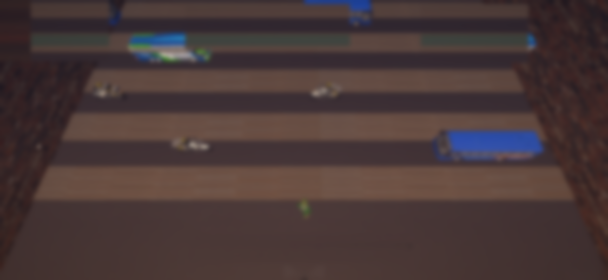

Back
Lagos map
₦12,450
NAIRA CHIPS
♥
3
Settings
✓
L1 Agege Bus Stop
✓
L2 Surulere Way
L3
L3 Ikorodu Road
L4 Mushin Market
L5 Oshodi Expressway
L6 Ikeja Along
L7 Ojota Intersect
L8 Third Mainland Bridge
L9 Lekki Toll Gate
∞
L10 Ojuelegba Chaos
L3 · Ikorodu Road
Lanes
5
Crowd
5 · Agbada Bigman joins
Best
00:42
sample
Stars
TBD
OYA, CROSS!
Clear Ikorodu Road first to open Mushin